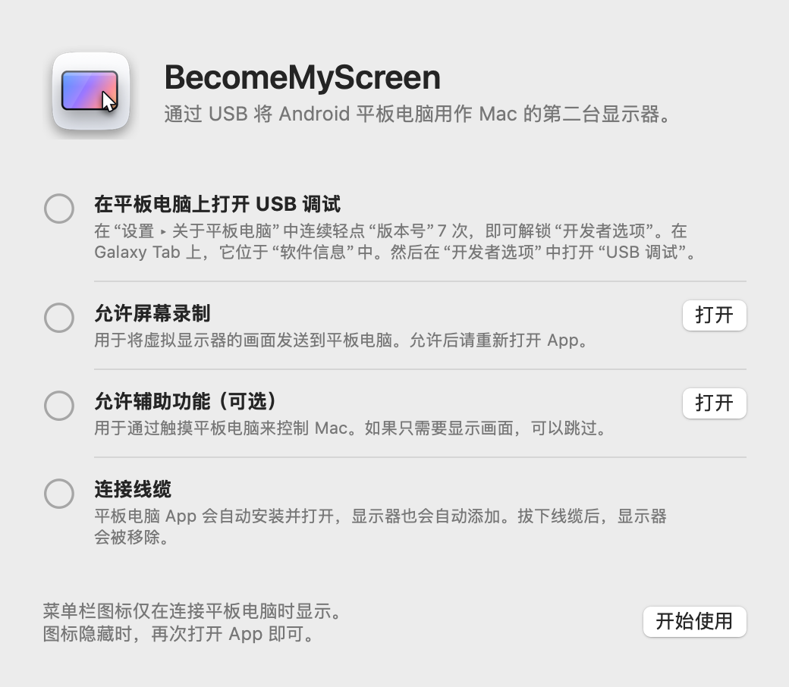
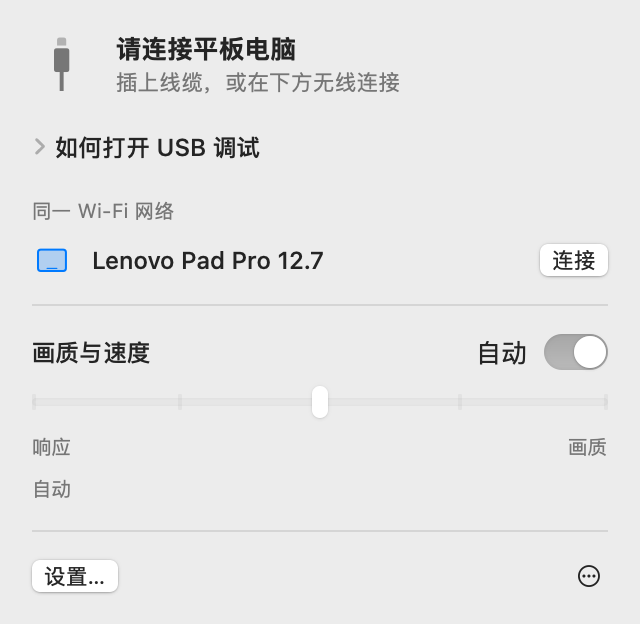
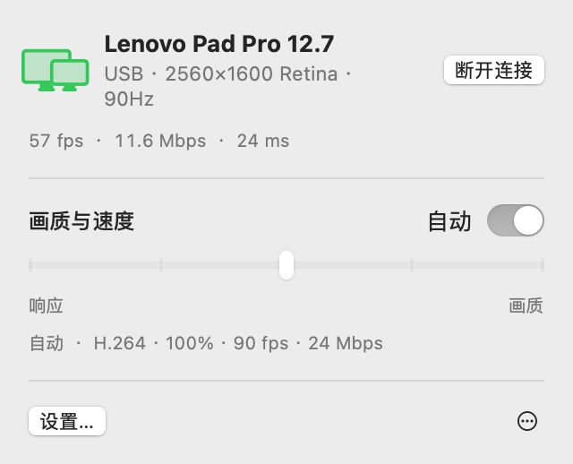
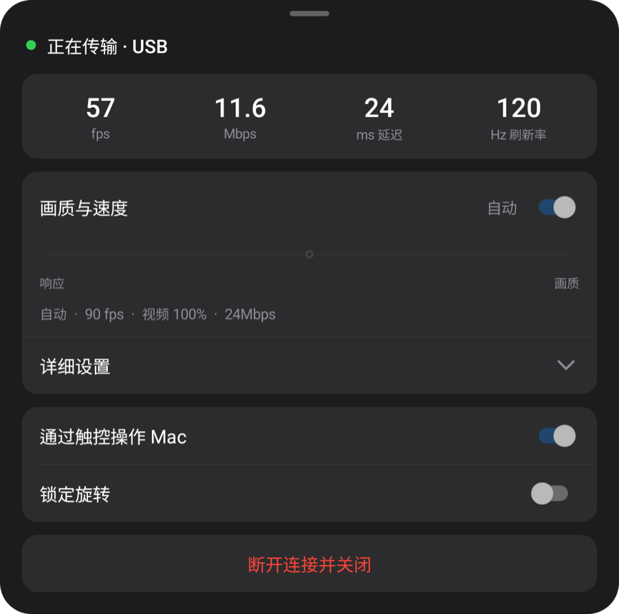
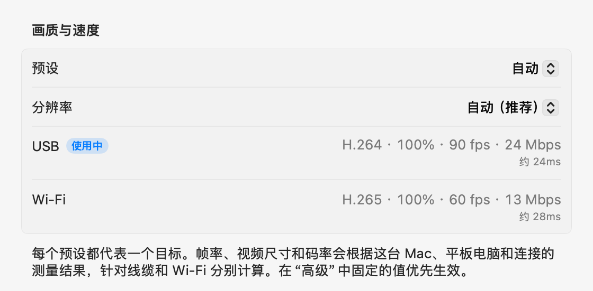

macOS + Windows
让平板显示
你的电脑画面。
将 Android 平板用作 Mac 或 Windows 的第二块屏幕。通过 USB 连接即可自动安装并打开平板应用。
打开 zip，将 App 移到“应用程序”文件夹并打开。首次连接方法请参阅开始使用。
请在电脑上打开此页面，下载 Mac 或 Windows 应用。

1.1.0
Windows
现已推出 Windows 11 预览版。一个安装包，包含 Intel/AMD x64 和 ARM64 原生应用。

运行安装程序，连接平板并允许 USB 调试。视频引擎会在首次启动时下载。
以下数据均在 Mac 上测得。
开始使用
只需设置一次。之后插上线缆就会添加显示器，在同一 Wi‑Fi 下无需线缆也能连接。
-
安装 Mac App
打开下载的 zip，将 BecomeMyScreen 移到“应用程序”文件夹并打开。允许屏幕录制后，再打开一次 App。
-
在平板电脑上打开 USB 调试
在“设置 › 关于平板电脑”中连续轻点“版本号”七次，即可解锁“开发者选项”。在 Galaxy Tab 上，它位于“软件信息”中。然后在“开发者选项”中打开“USB 调试”。
-
连接线缆
当平板电脑询问是否允许 USB 调试时，勾选“一律允许使用这台计算机进行调试”，然后轻点“允许”。Mac 会安装并打开平板电脑 App，然后添加显示器。无需另外下载平板电脑 App。

速度
从 Mac 捕获屏幕到平板电脑绘制画面所需的时间。使用 Lenovo Pad Pro 12.7 和搭载 M4 Pro 的 Mac 测得。
| 视频尺寸 | 60 fps | 120 fps |
|---|---|---|
| 100%2560×1600 | 20 ms | 24 ms |
| 75%1920×1200 | 14 ms | 19 ms |
| 50%1280×800 | 11 ms | 16 ms |
Apple 芯片中的硬件编码器将屏幕压缩为 H.264 并通过 USB 发送，平板电脑的硬件解码器在每一帧到达时将其绘制出来。首次连接时，“自动”会测量解码器的处理能力，并选择不会落后的最高帧率。在这台平板电脑上，它选择了 90fps。
测量方法：在校正两台设备的时钟差异后，测量 Mac 捕获一帧到平板电脑绘制该帧之间的时间。
无线
通过 USB 连接过一次的平板电脑，在同一 Wi‑Fi 下也能无线使用。工作时拔下线缆，画面会通过 Wi‑Fi 继续显示。
- 连接
- 在平板电脑上打开 App 后，它会出现在 Mac 菜单栏的“同一 Wi‑Fi 网络”列表中。点按“连接”即可显示画面。
- 拔下线缆时
- 1 秒内切换到 Wi‑Fi。虚拟显示器和窗口布局保持不变，重新插上线缆即恢复 USB 连接。
- 安全性
- 无线连接所用的密钥只通过 USB 线缆交换。只有密钥验证通过后才会建立连接，画面和输入全部使用 AES-256-GCM 加密。
- 自适应调节
- 平板电脑会确认收到的每一帧，Mac 会根据落后的程度跳过相应数量的帧并调整码率。即使 Wi‑Fi 暂时变慢，延迟也不会累积。

| 连接 | 延迟 | 备注 |
|---|---|---|
| USB | 约 20–25ms | 平板电脑的最高帧率 |
| Wi‑Fi 5 GHz | 40～55ms | 60fps；码率会自动提高，最高至画质设置 |
| Wi‑Fi 2.4 GHz | 40～65ms | 延迟偶尔会飙升到 100ms 以上，看起来可能会卡顿 |
使用 Lenovo Pad Pro 12.7，在 2560×1600、画面内容持续变化的情况下测得。如果平板电脑连接的是 2.4GHz Wi‑Fi，App 会建议切换到 5GHz。
画质与响应
从五个档位中选择一个，或保持“自动”。可以在 Mac 菜单栏或平板电脑菜单中更改，两边会同步变化。
| 预设 | 帧率 | 视频尺寸 | 码率 |
|---|---|---|---|
| 自动 | 90 fps | 100% | 24 Mbps |
| 1最快响应 | 120 fps | 50% | 8 Mbps |
| 2快速响应 | 120 fps | 75% | 14 Mbps |
| 3均衡 | 90 fps | 100% | 24 Mbps |
| 4高画质 | 90 fps | 100% | 33 Mbps |
| 5最佳画质 | 60 fps | 100% | 39 Mbps |
使用 Lenovo Pad Pro 12.7（2560×1600，120Hz）和搭载 M4 Pro 的 Mac，通过 USB 测得。每个预设都代表一个目标：在其他 Mac 或平板电脑上，以及通过 Wi‑Fi 连接时，预设会根据测量结果算出各自的数值。“自动”与“均衡”相同。
视频尺寸与 Mac 所识别的分辨率分开设置。缩小视频后，画面仍会铺满平板电脑屏幕，同时相应减轻解码器负担并降低延迟。
首次连接时，App 会用约 10 秒测量线缆、这台 Mac 的视频编码器，以及平板电脑解码器的各个模式；首次通过 Wi‑Fi 连接时，则会测量网络。每个预设都会根据这些数值，分别针对线缆和 Wi‑Fi 进行调整；在“高级”设置中，你还可以为每种连接固定任意数值。如果线缆速度慢，会提示你更换。



触控
触摸平板电脑，Mac 会将其作为鼠标输入接收。在 Mac 上允许辅助功能后即可启用。
| 平板电脑上 | Mac 上 |
|---|---|
| 轻点 | 点按 |
| 拖动 | 拖移 |
| 双指拖动 | 滚动 |
| 双指轻点 | 右键点按 |
| 三指轻点 | 打开平板电脑菜单 |
| 用触控笔绘画 | 以数位板输入的形式传送到 Mac，包括压感和倾斜度 |
| 将触控笔或鼠标悬停在屏幕上方 | 移动指针。按住触控笔按钮的同时触碰屏幕即可右键点按 |
会回到原位的指针
触摸平板电脑时，Mac 的指针会移到该位置。之后稍微移动鼠标，指针就会回到触摸前的位置，无需再把它拖回主显示器上正在进行的工作。你可以在设置中关闭此功能。
细节
- 菜单栏图标
-
仅在连接平板电脑时显示。图标隐藏时，再次打开 App，它会短暂出现并打开面板。
- 等待中
- 准备中
- 使用中
- 需要注意
- 打开平板电脑 App
- 插上线缆时，如果平板电脑 App 没有运行，Mac 会将其打开；如果屏幕已关闭，还会将其唤醒。它绝不会绕过锁定屏幕。
- 更新
- Mac App 会检查新版本，并在你选择时自行更新。如果其中带有较新的平板电脑 App，会在显示开始前先通过线缆更新平板电脑。
- 竖屏
- 将平板电脑转为竖屏后，虚拟显示器也会以竖屏方向重新创建。
- 刷新率与屏幕超时
- 传输期间，平板电脑的刷新率会保持锁定，不会降到 60Hz，屏幕也不会关闭。
- 线缆检查
- 如果 USB 连接速度低于 480Mbps、传输速度始终低于 8MB/s，或 3 分钟内断开 3 次，App 会建议你换用其他线缆或端口。
- 连接断开时
- 线缆脱落后，画面会通过 Wi‑Fi 继续。如果无法无线继续，虚拟显示器会保留一小段时间；若平板电脑在此期间重新连接，窗口布局将保持原样。
- 断开连接与重新连接
- 在菜单栏中点按“断开连接”后，即使线缆仍插着，平板电脑也会暂停显示画面。点按“重新连接”即可继续。
- 平板电脑 App 自动关闭
- 当平板电脑上没有连接任何设备（包括充电器）时，平板电脑 App 会在 10 秒后自动关闭。如果可以改为等待无线连接，它会等待 2 分钟。
系统要求
- Mac
- 搭载 Apple 芯片的 Mac，macOS 14 或更高版本
- Windows
- Windows 11 · Intel / AMD x64 · ARM64 · Windows
- 平板电脑
- Android 8.0 或更高版本，且可以打开 USB 调试的设备
- 线缆
- 支持数据传输的 USB 线缆。仅充电线缆无法连接。直接使用 Mac 本身的端口比通过集线器更可靠。
- 无线
- Mac 和平板电脑需要连接同一 Wi‑Fi，建议使用 5GHz。首次连接必须通过 USB。
- Mac 权限
- 屏幕录制。如需通过触控操作 Mac，还需要辅助功能；如需无线使用，还需要本地网络。
常见问题
Windows
如果 Windows ARM64 阻止显示驱动程序，请运行 ZIP 中的 Start-Mirroring.cmd 来镜像屏幕。 版本说明与已知限制
需要在平板电脑上安装 App 吗？
不需要。平板电脑 App 内置于 Mac App 中，插上线缆后 Mac 会安装并打开它。更新 Mac App 后，平板电脑 App 也会在下次连接时一并更新。
可以通过 Wi‑Fi 使用吗？
可以。通过 USB 连接一次后，之后在同一 Wi‑Fi 下即可无线连接。在平板电脑上打开 App，然后在 Mac 菜单栏中点按“连接”；或者在使用时直接拔下线缆。延迟比 USB 略高（5GHz 下为 40～55ms），2.4GHz Wi‑Fi 偶尔可能卡顿，因此建议使用 5GHz。
为什么首次连接必须通过 USB？
因为无线连接所用的密钥只通过线缆交换。这样，同一 Wi‑Fi 上的其他设备就无法冒充你的平板电脑连接到 Mac。平板电脑 App 也会在此时安装。
支持触控笔压感吗？
支持。触控笔的压感和倾斜度会以数位板输入（压感、倾斜度和接近）的形式传送到 macOS。它使用 Android 的标准触控笔输入，因此 S Pen 和 Lenovo 触控笔无需额外的 SDK 或驱动程序。已使用 Lenovo Pad Pro 12.7 的触控笔进行测试。
支持哪些平板电脑？
任何运行 Android 8.0 或更高版本、且可以打开 USB 调试的平板电脑都可以。开发和测量均在 Lenovo Pad Pro 12.7（2944×1840，120Hz）上完成，其他设备尚未亲自测试。虚拟显示器的分辨率和方向会在连接时跟随平板电脑的屏幕。
为什么没有在 App Store 上架？
创建虚拟显示器依赖 macOS 的一项私有功能，因此无法在 App Store 上发布。作为替代，此 App 使用 Apple 开发者证书签名并经过 Apple 公证，下载后即可直接打开。
为什么需要屏幕录制和辅助功能权限？
屏幕录制用于捕获要发送到平板电脑的虚拟显示器，辅助功能用于将平板电脑的触控和触控笔操作转换为 Mac 输入，本地网络用于查找同一 Wi‑Fi 上的平板电脑。画面只会通过 USB 线缆或在你的 Wi‑Fi 网络内传输（无线时会加密），绝不会发送到互联网。
连接总是断开。
请换用其他支持数据传输的线缆，或不使用集线器，直接插入 Mac 上的端口。如果 USB 连接速度慢或经常断开，App 会先提示你。短暂断开后，虚拟显示器会保留 15 秒，并从中断处继续。
平板电脑锁定时怎么办？
Mac 会唤醒屏幕并打开 App，但绝不会绕过锁定。使用 PIN 或图案解锁后即可立即连接。
支持搭载 Intel 处理器的 Mac 吗？
当前版本仅支持搭载 Apple 芯片的 Mac。